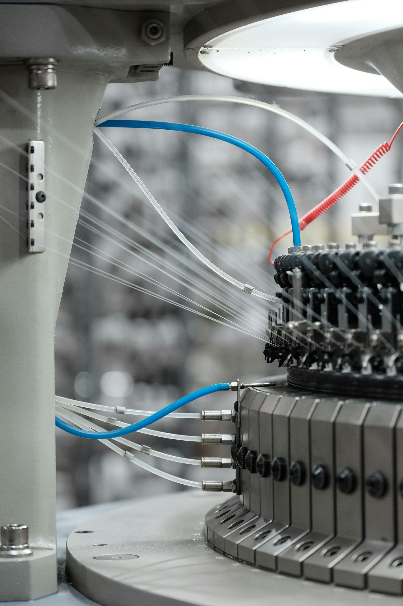

40 Years of Engineering Excellence
Engineered Technical Textiles for Coating, Lamination & Performance
Consistent substrates. Predictable performance.

Consistent substrates. Predictable performance.